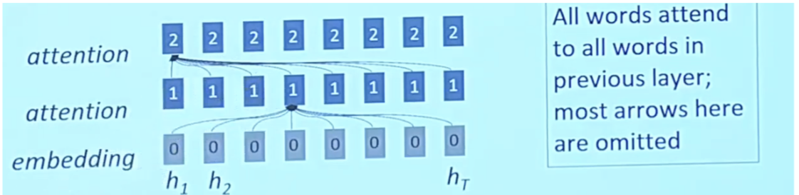

Natural Language Processing • Attention
- Overview
- Origins of attention
- Attention: Under the hood
- The Classic Sequence-to-Sequence Model
- Sequence-to-Sequence Model with Attention
- Context Vector
- Compared: attention mechanism and fixed-length context vector
- Extensions to the Classic Attention Mechanism
- Self Attention: Under the hood
- Encoder vs Decoder
- Multi-headed Attention
- Ghost Attention
- Linformer
- Summary
- References
- Citation
Overview
- The attention mechanism is now an established technique in many NLP tasks.
- Attention provides a solution to the bottleneck problem, but what is the bottleneck problem?
- The bottleneck problem is that the context vector turned out to be a bottleneck for these types of models. It made it challenging for the models to deal with long sentences.
- Attention allows the model to focus on the relevant parts of the input sequence as needed.
Origins of attention
- In the context of NLP, the attention mechanism was first introduced in “Neural Machine Translation by Jointly Learning to Align and Translate” at ICLR 2015 by Bahdanau et al. (2015). This served as a foundation upon which the self-attention mechanism in the Transformer paper was based on.
- This was proposed in the context of machine translation, where given a sentence in one language, the model has to produce a translation for that sentence in another language.
- In the paper, the authors propose to tackle the problem of a fixed-length context vector in the original seq2seq model for machine translation in “Learning Phrase Representations using RNN Encoder–Decoder for Statistical Machine Translation” by Cho et al. (2014).
- The following slide from Stanford’s CS25 course shows how the attention mechanism was conceived and is a perfect illustration of why AI/ML is an empirical field, built on intuition.
Attention: Under the hood
- As previously discussed, the role of attention in a model is to strategically focus on pertinent segments of the input sequence as and when required. This ability to tune into relevant sections enhances the model’s overall processing efficiency.
- In a shift from traditional practices, the encoder now funnels a significantly larger amount of data to the decoder. Rather than simply transmitting the last hidden state of the encoding phase, it channels all the hidden states to the decoder, ensuring a more comprehensive data transfer.
- A decoder utilizing attention features undertakes an additional step before generating its output. This step is designed to ensure the decoder’s focus is appropriately honed on parts of the input that are relevant to the current decoding time step. To achieve this, the following operations are performed:
- Each hidden state is multiplied by its respective softmax score. This results in an amplification of hidden states associated with high scores and effectively diminishes the impact of those with low scores. This selective amplification technique supports the model’s ability to maintain focus on the more relevant parts of the input.
- In an encoder, we employ the mechanism of self-attention. This technique allows the model to focus on different parts of the input independently, assisting the overall understanding of the sequence.
- Conversely, in a decoder, cross-attention is applied. This allows the decoder to focus on different parts of the encoder’s output, aiding in the generation of a more accurate translation or summary.
- With each step of the decoding process, a direct connection to the encoder is utilized to strategically zero in on a specific part of the input. This connection enables the model to maintain accuracy while parsing complex sequences.
The Classic Sequence-to-Sequence Model
- The seq2seq model is composed of two main components: an encoder, and a decoder, as shown in the figure (source) below:

-
The encoder reads the input sentence, a sequence of vectors \(x = (x_{1}, \dots , x_{T})\), into a fixed-length vector \(c\). The encoder is a recurrent neural network, typical approaches are GRU or LSTMs such that:
\[h_{t} = f\ (x_{t}, h_{t−1})\] \[c = q\ (h_{1}, \dotsc, h_{T})\]- where \(h_{t}\) is a hidden state at time \(t\), and \(c\) is a vector generated from the sequence of the hidden states, and \(f\) and \(q\) are some nonlinear functions.
-
At every time-step \(t\) the encoder produces a hidden state \(h_{t}\), and the generated context vector is modeled according to all hidden states.
-
The decoder is trained to predict the next word \(y_{t}\) given the context vector \(c\) and all the previously predict words \(\{y_{1}, \dots , y_{t-1}\}\), it defines a probability over the translation \({\bf y}\) by decomposing the joint probability:
\[p({\bf y}) = \prod\limits_{i=1}^{x} p(y_{t} | {y_{1}, \dots , y_{t-1}}, c)\]- where \(\bf y = \{y_{1}, \dots , y_{t}\}\). In other words, the probability of a translation sequence is calculated by computing the conditional probability of each word given the previous words. With an LSTM/GRU each conditional probability is computed as:
- where, \(g\) is a nonlinear function that outputs the probability of \(y_{t}\), \(s_{t}\) is the value of the hidden state of the current position, and \(c\) the context vector.
-
In a simple seq2seq model, the last output of the LSTM/GRU is the context vector, encoding context from the entire sequence. This context vector is then used as the initial hidden state of the decoder.
-
At every step of decoding, the decoder is given an input token and (the previous) hidden state. The initial input token is the start-of-string
<SOS>token, and the first hidden state is the context vector (the encoder’s last hidden state). -
So, the fixed size context-vector needs to contain a good summary of the meaning of the whole source sentence, being this one big bottleneck, specially for long sentences. The figure below (taken from Bahdanau et al. (2015)) shows how the performance of the seq2seq model varies by sentence length:
Sequence-to-Sequence Model with Attention
- The fixed size context-vector bottleneck was one of the main motivations by Bahdanau et al. (2015), which proposed a similar architecture but with a crucial improvement:
“The new architecture consists of a bidirectional RNN as an encoder and a decoder that emulates searching through a source sentence during decoding a translation”
-
The encoder is now a bidirectional recurrent network with a forward and backward hidden states. A simple concatenation of the two hidden states represents the encoder state at any given position in the sentence. The motivation is to include both the preceding and following words in the representation/annotation of an input word.
-
The other key element, and the most important one, is that the decoder is now equipped with some sort of search, allowing it to look at the whole source sentence when it needs to produce an output word, the attention mechanism. The figure below (taken from Bahdanau et al. (2015)) illustrates the attention mechanism in a seq2seq model.
-
The figure above gives a good overview of this new mechanism. To produce the output word at time \(y_{t}\) the decoder uses the last hidden state from the decoder - one can think about this as some sort of representation of the already produced words - and a dynamically computed context vector based on the input sequence.
-
The authors proposed to replace the fixed-length context vector by a another context vector \(c_{i}\) which is a sum of the hidden states of the input sequence, weighted by alignment scores.
-
Note that now the probability of each output word is conditioned on a distinct context vector \(c_{i}\) for each target word \(y\).
-
The new decoder is then defined as:
\[p(y_{t} | {y_{1}, \dots , y_{t-1}}, c) = g(y_{t−1}, s_{i}, c)\]- where \(s_{i}\) is the hidden state for time \(i\), computed by:
- that is, a new hidden state for \(i\) depends on the previous hidden state, the representation of the word generated by the previous state and the context vector for position \(i\). The lingering question now is, how to compute the context vector \(c_{i}\)?
- Instead of source and target sentences, we also have 2 sequences: passage and question(lengths are imbalance)
- We need to model which words in the passage are most relevant to the question (and which question words)
- Attention is the key ingredient here, similar to which words in source sentences are most relevant to the current target word
Context Vector
- “In attention, the query refers to the word we’re computing attention for. In the case of an encoder, the query vector points to the current input word (aka context). For example, if the context was the first word in the input sentence, it would have a query vector q1.” (source)
-
The context vector \(c_{i}\) is a sum of the hidden states of the input sequence, weighted by alignment scores. Each word in the input sequence is represented by a concatenation of the two (i.e., forward and backward) RNNs hidden states, let’s call them annotations.
-
Each annotation contains information about the whole input sequence with a strong focus on the parts surrounding the \(i_{th}\) word in the input sequence.
- The context vector \(c_{i}\) is computed as a weighted sum of these annotations:
-
The weight \(\alpha_{ij}\) of each annotation \(h_{j}\) is computed by:
\[\alpha_{ij} = \text{softmax}(e_{ij})\]- where:
-
\(a\) is an alignment model which scores how well the inputs around position \(j\) and the output at position \(i\) match. The score is based on the RNN hidden state \(s_{i−1}\) (just before emitting \(y_{i}\) and the \(j_{th}\) annotation \(h_{j}\) of the input sentence
\[a(s_{i-1},h_{j}) = \mathbf{v}_a^\top \tanh(\mathbf{W}_{a}\ s_{i-1} + \mathbf{U}_{a}\ {h}_j)\]- where both \(\mathbf{v}_a\) and \(\mathbf{W}_a\) are weight matrices to be learned in the alignment model.
-
The alignment model in the paper is described as feed forward neural network whose weight matrices \(\mathbf{v}_a\) and \(\mathbf{W}_a\) are learned jointly together with the whole graph/network.
-
The authors note:
“The probability \(\alpha_{ij}h_{j}\) reflects the importance of the annotation \(h_{j}\) with respect to the previous hidden state \(s_{i−1}\) in deciding the next state \(s_{i}\) and generating \(y_{i}\). Intuitively, this implements a mechanism of attention in the decoder.”
Compared: attention mechanism and fixed-length context vector
- Let’s visually review the attention mechanism and compare it against the fixed-length context vector approach. The pictures below (credit: Nelson Zhao) help understand the difference between the two encoder-decoder approaches. The figure below illustrates the Encoder-Decoder architecture with a fixed-context vector.
- On the other hand, the figure below illustrates the Encoder-Decoder architecture with attention mechanism proposed in “Neural Machine Translation by Jointly Learning to Align and Translate” by Bahdanau et al. (2015).
Extensions to the Classic Attention Mechanism
- Luong et al. (2015) proposed and compared other mechanisms of attentions, more specifically, alternative functions to compute the alignment score:
- Note that the concat operation is the same as in Bahdanau et al. (2015); however, instead of a weighted average over all the source hidden states, they proposed a mechanism of local attention which focus only on a small subset of the source positions per target word instead of attending to all words on the source for each target word.
Self Attention: Under the hood

- First step is to create 3 vectors from each of the encoders input vectors (embeddings of each word)
- Key, query, value vectors
- “Imagine yourself in a library. You have a specific question (query). Books on the shelves have titles on their spines (keys) that suggest their content. You compare your question to these titles to decide how relevant each book is, and how much attention to give each book. Then, you get the information (value) from the relevant books to answer your question.” (source)
- These vectors are created by multiplying the embedding by 3 matrices that we trained during the training process
- K, V, Q dimension is 64 while embedding and encoder input/output vectors have dimension of 512
- Lets look at the image below by Jay Alammar:
- What are query, key and value vectors?
- They are abstractions that are useful for calculating and thinking about attention
- Second Step in calculating self attention is to calculate a score
- Say we’re calculating the self-attention for the first word in this example, “Thinking”. We need to score each word of the input sentence against this word.
- The score determines how much focus to place on other parts of the input sentence as we encode a word at a certain position.
- The score is calculated by taking the dot product of the query vector with the key vector of the respective word we’re scoring. So if we’re processing the self-attention for the word in position #1, the first score would be the dot product of \(q1\) and \(k1\).
- The second score would be the dot product of \(q1\) and \(k2\).
- Third and fourth steps are to divide the scores by 8 (the square root of the dimension of the key vectors used in the paper - 64) then pass the result through a softmax to normalize the scores so theyre all positive and add up to 1
- The fifth step is to multiply each value vector by the softmax score (in preparation to sum them up). The intuition here is to keep intact the values of the word(s) we want to focus on, and drown-out irrelevant words (by multiplying them by tiny numbers like 0.001, for example).
- The sixth step is to sum up the weighted value vectors. This produces the output of the self-attention layer at this position (for the first word).
- Attention operates on queries, keys and value (all vectors)
- All \(q\), \(k\), and \(v\) come form the same source, same sentence
- RNN = fully connected layer, you have your weights that you are learning slowly over the course of the network
- In attention, interaction between key and query vectors which are depend on actual content, are allowed to vary by time, and so strengths of attention weights can change as a function of the input
- Parametrization is different, instead of learning independent connection weight, instead you’re allowed to parameterize the attention as dot product functions between vectors of representations
- Throw out LSTMs and use self attention instead
- Key query value are actually just the same vector
- Self attention is a function on \(k\), \(q\), \(v\)
- Self attention doesn’t know the order of its inputs
- Sequence order is the first attention problem
- In the context of self-attention mechanisms, the key-value query is a fundamental concept used to compute the attention weights between different elements of a sequence. Self-attention is commonly used in transformer-based models, such as the Transformer architecture.
- In self-attention, we have a sequence of elements, which could be words in a sentence or tokens in a document. Each element in the sequence is associated with three vectors: the query vector, the key vector, and the value vector. These vectors are obtained by linearly transforming the input representation of the elements.
- To compute the attention weights, we calculate a similarity score between a query vector and key vectors of all elements in the sequence. This is typically done using the dot product or a learned function like the scaled dot-product attention. The resulting similarity scores represent the importance or relevance of each element in the sequence with respect to the query.
- Once we have the similarity scores, we apply a softmax function to normalize them, ensuring that they sum up to 1. These normalized scores, known as attention weights, indicate the relative importance or attention given to each element in the sequence.
- Finally, we compute the weighted sum of the value vectors, where the weights are given by the attention weights. This weighted sum represents the output of the self-attention mechanism and is used as input for further processing in the transformer network.
-
In summary, the key-value query in self-attention refers to the process of associating query, key, and value vectors with each element in a sequence. The query vector is used to compute similarity scores with the key vectors, which are then normalized to obtain attention weights. These attention weights are used to weigh the corresponding value vectors, resulting in a weighted sum that represents the output of the self-attention mechanism.
+---------+ | Query | +---------+ | v +-----------+ | Linear | | Transform | +-----------+ | v +-------+ +-----| Query | | +-------+ | | v | +---------+---------+---------+ | Element 1: | | +-------+ +-------+ +-------+ | | | Key | | Value | | Query | | | +-------+ +-------+ +-------+ | +-----------------------------+ | | v | +---------+---------+---------+ | Element 2: | | +-------+ +-------+ +-------+ | | | Key | | Value | | Query | | | +-------+ +-------+ +-------+ | +-----------------------------+ | | v | +---------+---------+---------+ | Element 3: | | +-------+ +-------+ +-------+ | | | Key | | Value | | Query | | | +-------+ +-------+ +-------+ | +-----------------------------+ | | v | ... -
In the diagram, each element in the sequence (e.g., Element 1, Element 2, Element 3) has associated key, value, and query vectors. These vectors are obtained by applying a linear transformation to the input representation of each element.
-
The query vector (represented by the Query box on the top left) is used to calculate similarity scores with the key vectors (represented by the Key boxes). The similarity scores reflect the relevance of each element to the query.
-
The attention weights, which represent the normalized similarity scores, are then used to weigh the value vectors (represented by the Value boxes). The weighted sum of the value vectors produces the output of the self-attention mechanism.
- This process is repeated for each element in the sequence, allowing the self-attention mechanism to capture relationships and dependencies between different parts of the input sequence.
Encoder vs Decoder
- “The encoder takes a text input, such as a sentence, and returns a sequence of embeddings. These output embeddings can then be used for classification, translation, semantic similarity, etc. Self-attention enables the encoder to weigh the importance of each word and capture both short and long-range dependencies.
- In contrast, the decoder takes inputs such as a start-of-sentence token and (optional) embeddings from the encoder, and returns probabilities to select the next word. Self-attention enables the decoder to focus on different parts of the output generated so far; cross-attention (aka encoder-decoder attention) helps it attend to the encoder’s output.
- How does the decoder generate words?
- The decoder outputs the probability of the next word (i.e., every possible word has an associated probability). Thus, we can generate the next word by greedily picking the word with the highest probability. Alternatively, we can apply beam search and keep the top n predictions, generate the word after next for each of these top n predictions, and select whichever combination had less error.” (source)
Multi-headed Attention
- “Multiple attention layers builds in redundancy (on top of having multiple attention heads). If we only had a single attention layer, that attention layer would have to do a flawless job—this design could be brittle and lead to suboptimal outcomes. We can address this via multiple attention layers, where each one uses the output of the previous layer with the safety net of skip connections. Thus, if any single attention layer messed up, the skip connections and downstream layers can mitigate the issue.
Stacking attention layers also broadens the model’s receptive field. The first attention layer produces context vectors by attending to interactions between pairs of words in the input sentence. Then, the second layer produces context vectors based on pairs of pairs, and so on. With more attention layers, the Transformer gains a wider perspective and can attend to multiple interaction levels within the input sentence.” (source)
- Expands the models ability to focus on different positions.
- The encoder starts by processing the input sequence. The output of the top encoder is then transformed into a set of attention vectors K and V. These are to be used by each decoder in its “encoder-decoder attention” layer which helps the decoder focus on appropriate places in the input sequence
- In the decoder, the self-attention layer is only allowed to attend to earlier positions in the output sequence. This is done by masking future positions (setting them to -inf) before the softmax step in the self-attention calculation.
- The “Encoder-Decoder Attention” layer works just like multiheaded self-attention, except it creates its Queries matrix from the layer below it, and takes the Keys and Values matrix from the output of the encoder stack.
- The decoder stack outputs a vector of floats. How do we turn that into a word? That’s the job of the final Linear layer which is followed by a Softmax Layer.
- The softmax layer then turns those scores into probabilities (all positive, all add up to 1.0). The cell with the highest probability is chosen, and the word associated with it is produced as the output for this time step.
- Let’s look at an example :
- The animal didn’t cross the street because it was too tired”
- What does “it” in this sentence refer to? Is it referring to the street or to the animal? It’s a simple question to a human, but not as simple to an algorithm.
- When the model is processing the word “it”, self-attention allows it to associate “it” with “animal”.
- Self-attention is the method the Transformer uses to bake the “understanding” of other relevant words into the one we’re currently processing.
- Both CNNs and RNNs have been crucial in sequence transduction applications involving the encoder-decoder architecture. Attention-based mechanisms, as described above, have further boosted the capabilities of these models.
- However, one of the bottlenecks suffered by these architectures is the sequential processing at the encoding step. To address this, Vaswani et al. (2017) proposed the Transformer which dispensed the recurrence and convolutions involved in the encoding step entirely and based models only on attention mechanisms to capture the global relations between input and output.
- Significantly improves NMT performance
- Provides more human like model of the MT process
- Solves the bottleneck problem, allows decoder to look directly at source, bypass bottleneck
- Provides some interpretability
- Helps with vanishing gradient problem
- Always involves computing the attention scores
- Taking softmax to get attention distribution
- Using attention distribution to take weighted sum of values and thus obtaining the attention output
- Several attention variants:
- Basic dot product
- Multiplicative attention
- Reduced rank multiplicative attention
- Additive attention
- Attention is a general Deep learning technique, can use it in many architectures not just seq2seq
- Given a set of vector values and a vector query, attention is a technique to compute a weighted sum of the values, dependent on the query
Ghost Attention
- The authors of Llama 2 proposed Ghost Attention (GAtt).
- The authors have introduced Ghost Attention (GAtt), an innovative technique specifically designed to aid artificial intelligence in remembering and adhering to initial instructions throughout a conversation. This methodology extends the notion of Context Distillation, where specific details are distilled and highlighted from the broader context to enhance understanding.
- Context Distillation is a concept that focuses on highlighting and isolating specific, crucial details from a larger and more complex context. This process is similar to distilling, where the essential elements are extracted from a compound mixture.Context Distillation is used to introduce and retain an instruction throughout a dialogue. This helps the model to consistently remember and adhere to the instruction, enhancing its ability to maintain focus and perform accurately.
- In this technique, an instruction - a directive that must be consistently followed during the entire dialogue - is added to all user messages in a synthetic dialogue dataset. However, during the training phase, the instruction is only retained in the first turn of the dialogue and the loss (a measure of error) is set to zero for all tokens (representative units of information) from earlier turns.
- The authors applied this unique approach across a variety of synthetic constraints, which included diverse elements like hobbies, languages, and public figures. Implementing GAtt effectively preserved attention on initial instructions for a significantly larger portion of the conversation, ensuring that the AI stayed focused on its tasks.
- One of the notable achievements of GAtt is its ability to maintain consistency in adhering to initial instructions even over extended dialogues, comprising more than 20 turns, until it hits the maximum context length that the model can handle. While this first iteration has proven successful, the authors believe that there is ample room for further refinement and improvement, suggesting that the Ghost Attention technique can continue to evolve for enhanced performance.
- Let’s say we are training a dialogue system to book appointments for a dental clinic, and one of the rules we want the system to follow is that it should always inquire about the patient’s dental insurance details.
- In the synthetic dialogue dataset used for training, we append the instruction “Always ask about dental insurance” to every user message.
- For example:
- User: “I need an appointment.”
- AI (with instruction): “Always ask about dental insurance. Sure, I can help you with that. Do you have a preferred date and time?”
- User: “How about next Tuesday at 10 am?”
- AI (with instruction): “Always ask about dental insurance. That time works. May I also ask if you have dental insurance and, if so, could you provide the details?”
-
During training, GAtt retains this instruction only in the first turn and sets the loss to zero for all tokens from earlier turns. The model will be trained to understand that asking about dental insurance is an important part of the conversation, and it should remember this instruction even in later turns.
- For example, when the model is actually deployed:
- User: “I need an appointment.”
- AI: “Sure, I can help you with that. Do you have a preferred date and time?”
- User: “How about next Tuesday at 10 am?”
- AI: “That time works. May I also ask if you have dental insurance and, if so, could you provide the details?”
- Notice that even though the instruction “Always ask about dental insurance” is not explicitly mentioned during the conversation after training, the AI system consistently adheres to it throughout the dialogue, as it has been trained using GAtt.
- This technique ensures the AI model stays focused on the initial instruction, in this case, asking about dental insurance, enhancing its dialogue capabilities and making it more reliable for the task at hand.
Linformer
-
Linformer introduces a novel approach to tackle the self-attention bottleneck typically found in Transformer models. This approach is particularly relevant for handling long sequences, which can be computationally expensive with traditional self-attention mechanisms.
-
How Linformer Achieves Linear Attention Calculation Time:
-
Low-Rank Approximation: The core idea behind Linformer is the observation that self-attention can be approximated by a low-rank matrix. This implies that the complex relationships captured by self-attention in Transformers do not necessarily require a full rank matrix, allowing for a more efficient representation.
-
Reduced Complexity: While standard self-attention mechanisms in Transformers have a time and space complexity of (O(n^2)) with respect to the sequence length (n), Linformer reduces this complexity to (O(n)). This significant reduction is both in terms of time and space, making it much more efficient for processing longer sequences.
-
Mechanism of Linear Self-Attention: The Linformer achieves this by decomposing the scaled dot-product attention into multiple smaller attentions through linear projections. Specifically, it introduces two linear projection matrices (E_i) and (F_i) which are used when computing the key and value matrices. By first projecting the original high-dimensional key and value matrices into a lower-dimensional space ((n \times k)), Linformer effectively reduces the complexity of the attention mechanism.
-
Combination of Operations: The combination of these operations forms a low-rank factorization of the original attention matrix. Essentially, Linformer simplifies the computational process by approximating the full attention mechanism with a series of smaller, more manageable operations that collectively capture the essential characteristics of the original full-rank attention.
- In summary, Linformer proposes a more efficient self-attention mechanism for Transformers by leveraging the low-rank nature of self-attention matrices. This approach significantly reduces the computational burden, especially for long sequences, by lowering the complexity of attention calculations from quadratic to linear in terms of both time and space. This makes Linformer an attractive choice for tasks involving large datasets or long sequence inputs, where traditional Transformers might be less feasible due to their higher computational demands.
Summary
- This was a short introduction on the first “classic” attention mechanism on which subsequent techniques such as self-attention or query-key-value-attention are based.
- After transforming the field of Neural Machine Translation, the attention mechanism was applied to other natural language processing tasks, such as document-level classification or sequence labelling.
References
- An Introductory Survey on Attention Mechanisms in NLP Problems (arXiv.org version)
- Neural Machine Translation by Jointly Learning to Align and Translate (slides)
- Effective Approaches to Attention-based Neural Machine Translation (slides)
- “Attention, Attention” in Lil’Log
- Big Bird: Transformers for Longer Sequences
- Paper Review: Llama 2: Open Foundation and Fine-Tuned Chat Models
- “Attention” in Eugene Yan
Citation
If you found our work useful, please cite it as:
@article{Chadha2021Distilled,
title = {Attention},
author = {Jain, Vinija and Chadha, Aman},
journal = {Distilled Notes for Stanford CS224n: Natural Language Processing with Deep Learning},
year = {2021},
note = {\url{https://aman.ai}}
}